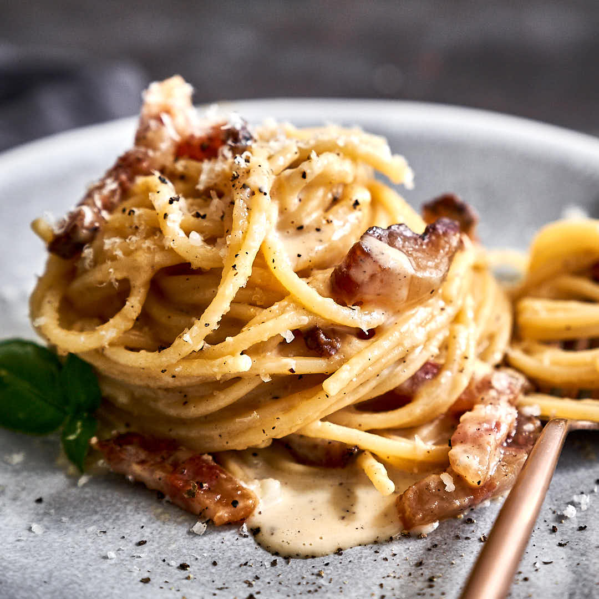

Wir stellen folgendende Pasta-Variationen selbst her:
- Spagetti, Maccharoni, Tagliatelle
- Tortellini, Ravioli (Füllungen: Steinpilz, Parmaschinken, Quattro Formaggi)
- Penne, Farfalle, Rigatoni, Orichiette
-
Spagetti alla Carbonara
Ingredienti
- Spagetti
- Guanciale
- Egg
- Pecorino Cheese
- Black Pepper
Storia di Origine
Einer verbreiteten Legende nach geht das Gericht auf Kohlenhändler, italienisch Carbonari, zurück, die sich in den Apenninen während der Arbeitspausen Penne mit Speck und geriebenem Käse gekocht haben sollen. Alla carbonara heißt also „nach Köhlerart“. Oft wird gemutmaßt, dass der Name von einem der beiden traditionsreichen römischen Restaurants namens La Carbonara abgeleitet wurde,von den Restaurants selbst wird diese Version jedoch bestritten..
Tortellini alla Panna

Ingredienti
- Tortellini
- Parma-Schinken
- Sahne
- Parmesan Cheese
Storia di Origine
Als Ursprungsort der Tortellini gilt neben Bologna und Modena auch die emilianische Gemeinde Castelfranco Emilia, die so ziemlich genau in der Mitte der beiden großen Städte liegt. Einige Quellen sprechen sogar der Region Lombardei den eigentlichen Ursprung der Tortellini zu. Hier sollen bereits im Mittelalter ähnliche gefüllte Teigtaschen zubereitet worden sein. Die ersten Aufzeichnungen der Tortellini mit der bekannten Füllung aus Schweinefleisch, Rohschinken, Parmigiano und Mortadella wurde erst im Jahr 1871 in einem Rezept aus dem italienischen Kochbuch Il cuoco sapiente, ossia l’arte di piacere ai gusti degli Italiani unter dem Namen Cappelletti alla bolognese entdeckt. Bologna also, oder etwa doch nicht?